-
To verify under writer offset control module fields and creation and updation
10:42:48 AM / 34:19:618 Fail
To verify under writer offset control module fields and creation and updation
08.02.2022 10:42:48 08.02.2022 10:47:07 34:19:618 · #test-id=1PassTo verify user can able to create the under writer off set recordGiven Navigate to ULS application URLstepdefinitions.HooksClass.addScreenshot(io.cucumber.java.Scenario)screenshot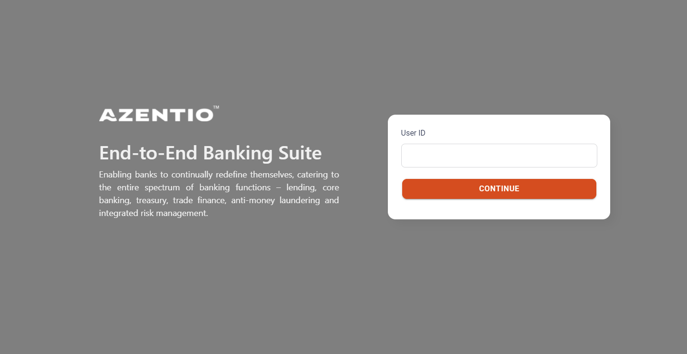Then login with valid maker credentialsstepdefinitions.HooksClass.addScreenshot(io.cucumber.java.Scenario)screenshot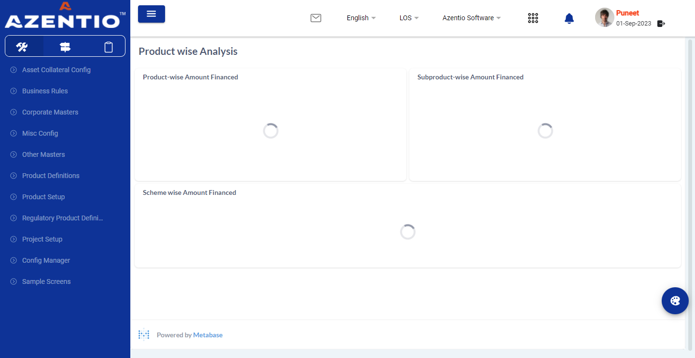And click on business rules main modulestepdefinitions.HooksClass.addScreenshot(io.cucumber.java.Scenario)screenshot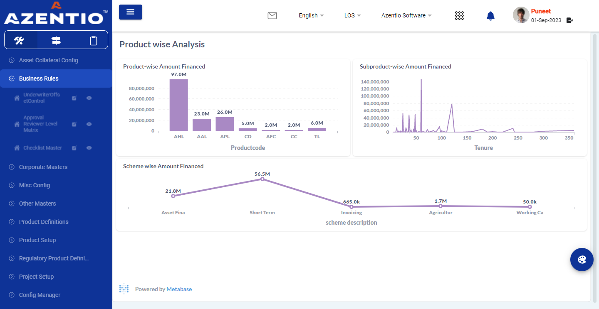And click on under writer off set control view buttonstepdefinitions.HooksClass.addScreenshot(io.cucumber.java.Scenario)screenshot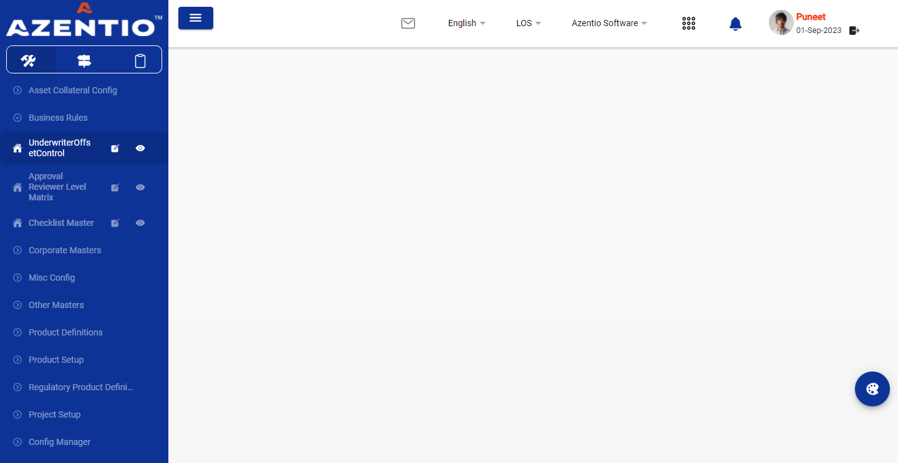Then click on add button to create under writer off set recordstepdefinitions.HooksClass.addScreenshot(io.cucumber.java.Scenario)screenshot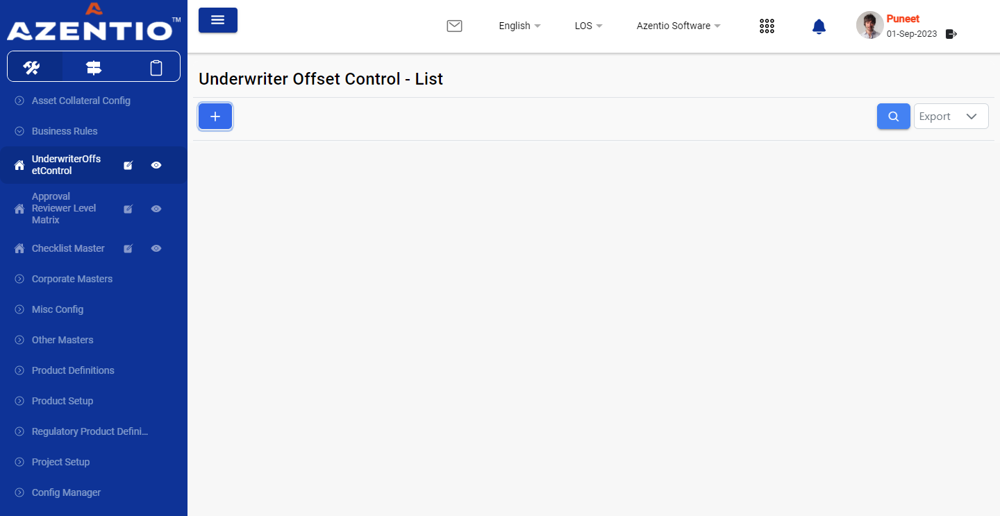Then verify back button and save buttons are visible when user click on add buttonstepdefinitions.HooksClass.addScreenshot(io.cucumber.java.Scenario)screenshotThen verify minimum value input box should be mendatory and field should be text boxstepdefinitions.HooksClass.addScreenshot(io.cucumber.java.Scenario)screenshotAnd user can able to enter the minimum value input boxstepdefinitions.HooksClass.addScreenshot(io.cucumber.java.Scenario)screenshot Then verify maximum value input box should be mendatory and field should be text boxstepdefinitions.HooksClass.addScreenshot(io.cucumber.java.Scenario)screenshot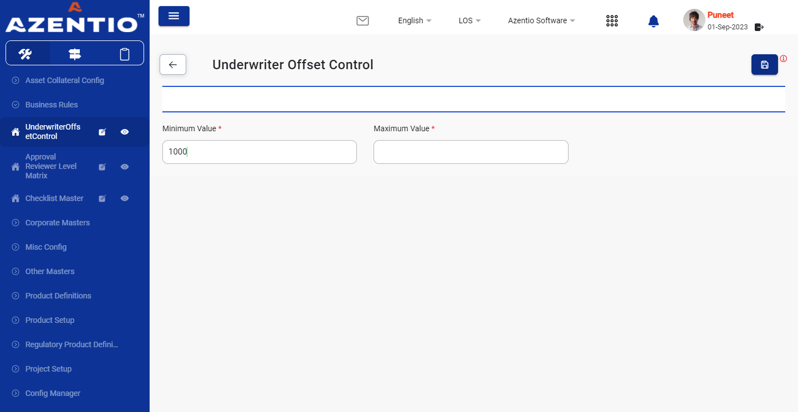And user can able to enter the maximum value input boxstepdefinitions.HooksClass.addScreenshot(io.cucumber.java.Scenario)screenshot
Then verify maximum value input box should be mendatory and field should be text boxstepdefinitions.HooksClass.addScreenshot(io.cucumber.java.Scenario)screenshot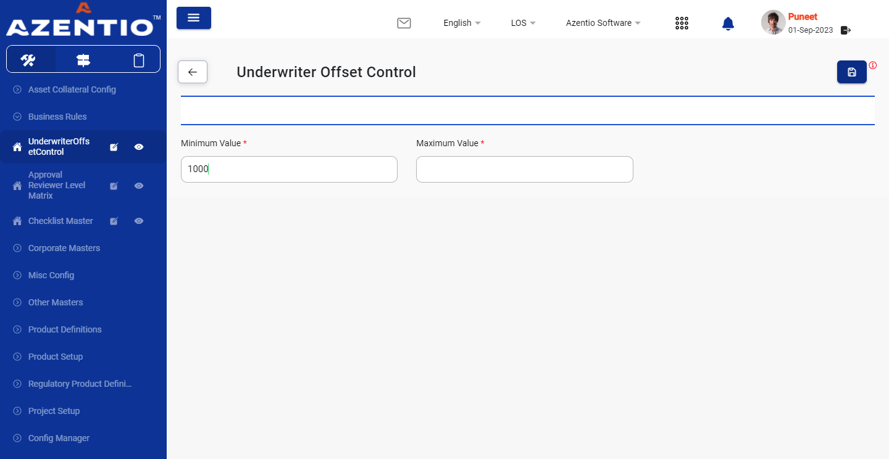And user can able to enter the maximum value input boxstepdefinitions.HooksClass.addScreenshot(io.cucumber.java.Scenario)screenshot Then verify available field should be non mendatory and field should be display onlystepdefinitions.HooksClass.addScreenshot(io.cucumber.java.Scenario)screenshotThen verify selected field should be non mendatory and field should be display onlystepdefinitions.HooksClass.addScreenshot(io.cucumber.java.Scenario)screenshot
Then verify available field should be non mendatory and field should be display onlystepdefinitions.HooksClass.addScreenshot(io.cucumber.java.Scenario)screenshotThen verify selected field should be non mendatory and field should be display onlystepdefinitions.HooksClass.addScreenshot(io.cucumber.java.Scenario)screenshot Then click on save button in under writer off set screenstepdefinitions.HooksClass.addScreenshot(io.cucumber.java.Scenario)screenshotWhen click on mail box after saving the under writer recordstepdefinitions.HooksClass.addScreenshot(io.cucumber.java.Scenario)screenshot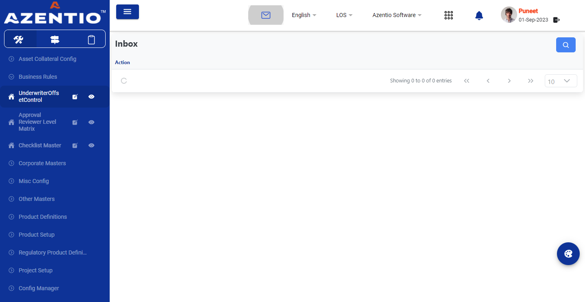Then click on search button to search the under writer off set recordstepdefinitions.HooksClass.addScreenshot(io.cucumber.java.Scenario)screenshotAnd click on first under writer off set recordstepdefinitions.HooksClass.addScreenshot(io.cucumber.java.Scenario)screenshotAnd submit the under writer off set recordstepdefinitions.HooksClass.addScreenshot(io.cucumber.java.Scenario)screenshot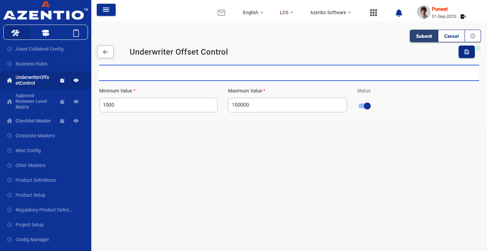Then give alert remark and click on submit in alertstepdefinitions.HooksClass.addScreenshot(io.cucumber.java.Scenario)screenshot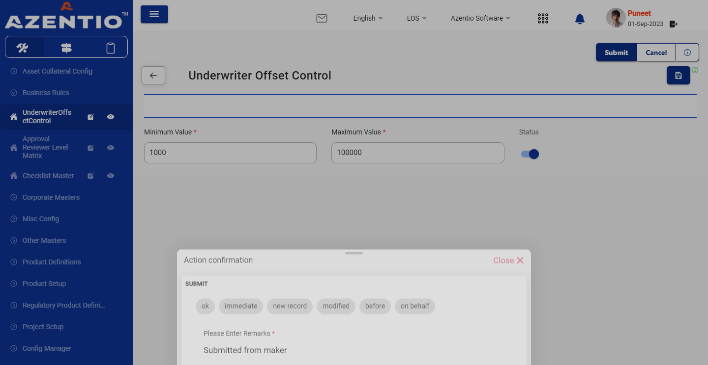Then store the checker idstepdefinitions.HooksClass.addScreenshot(io.cucumber.java.Scenario)screenshot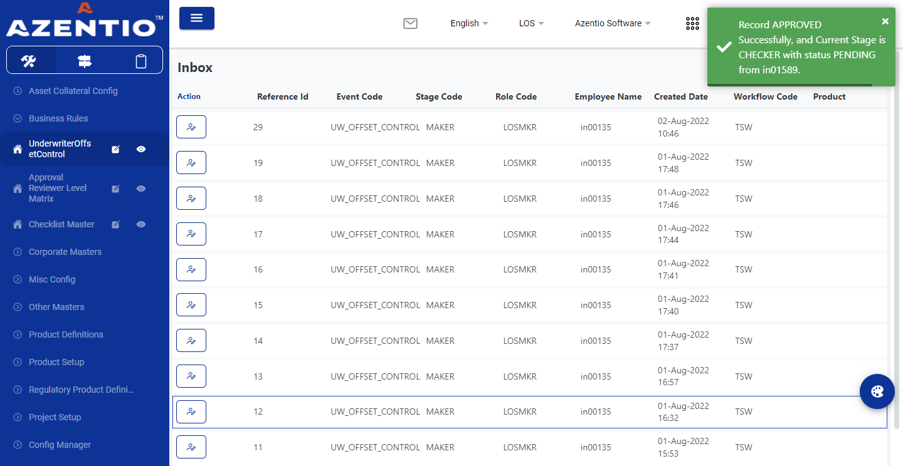PassTo verify checker user can able to approve the under writer off set control recordGiven Navigate to ULS application URLstepdefinitions.HooksClass.addScreenshot(io.cucumber.java.Scenario)screenshot
Then click on save button in under writer off set screenstepdefinitions.HooksClass.addScreenshot(io.cucumber.java.Scenario)screenshotWhen click on mail box after saving the under writer recordstepdefinitions.HooksClass.addScreenshot(io.cucumber.java.Scenario)screenshot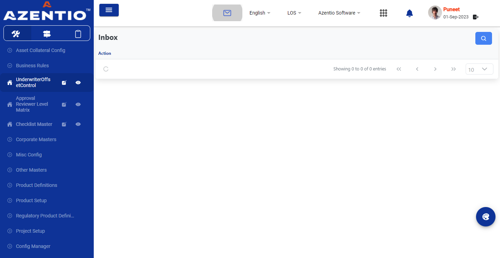Then click on search button to search the under writer off set recordstepdefinitions.HooksClass.addScreenshot(io.cucumber.java.Scenario)screenshotAnd click on first under writer off set recordstepdefinitions.HooksClass.addScreenshot(io.cucumber.java.Scenario)screenshotAnd submit the under writer off set recordstepdefinitions.HooksClass.addScreenshot(io.cucumber.java.Scenario)screenshot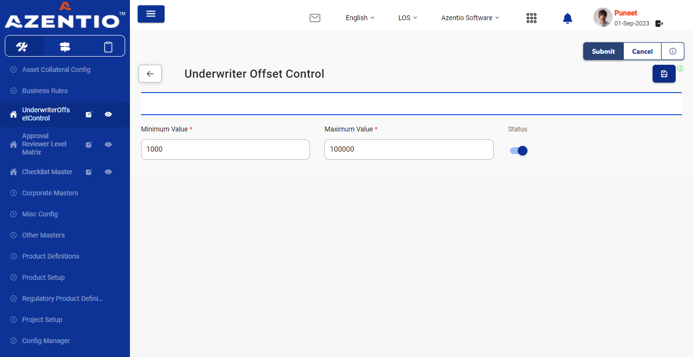Then give alert remark and click on submit in alertstepdefinitions.HooksClass.addScreenshot(io.cucumber.java.Scenario)screenshot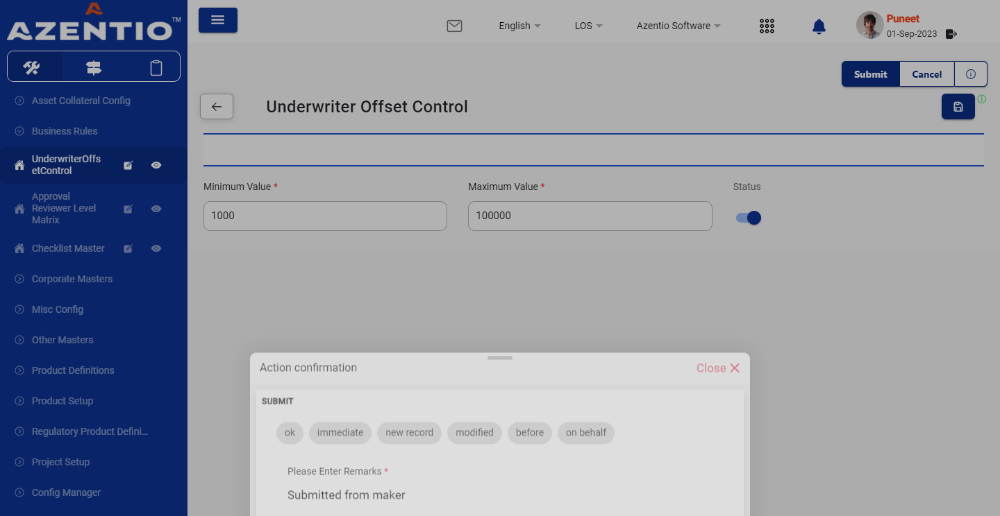Then store the checker idstepdefinitions.HooksClass.addScreenshot(io.cucumber.java.Scenario)screenshot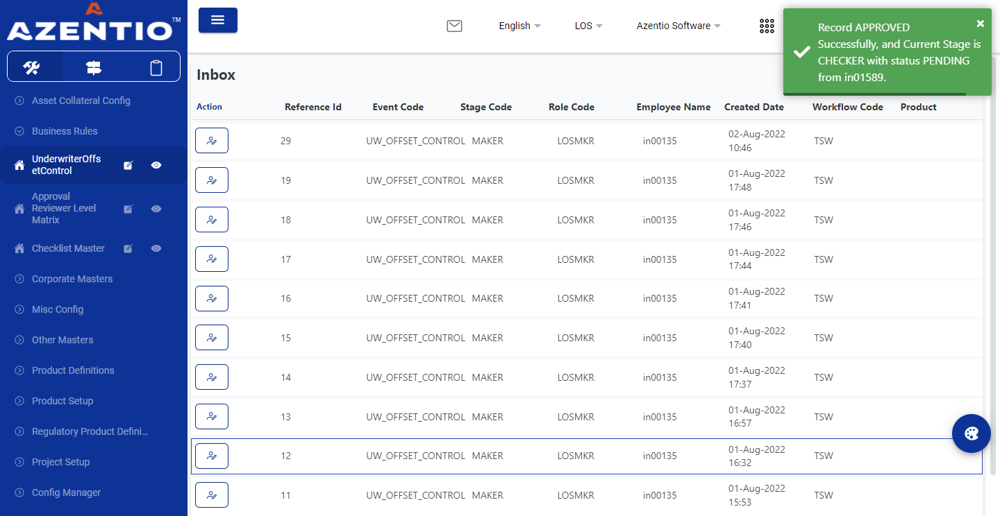PassTo verify checker user can able to approve the under writer off set control recordGiven Navigate to ULS application URLstepdefinitions.HooksClass.addScreenshot(io.cucumber.java.Scenario)screenshot Then login with checker userstepdefinitions.HooksClass.addScreenshot(io.cucumber.java.Scenario)screenshot
Then login with checker userstepdefinitions.HooksClass.addScreenshot(io.cucumber.java.Scenario)screenshot And click on menu bar the click on inboxstepdefinitions.HooksClass.addScreenshot(io.cucumber.java.Scenario)screenshot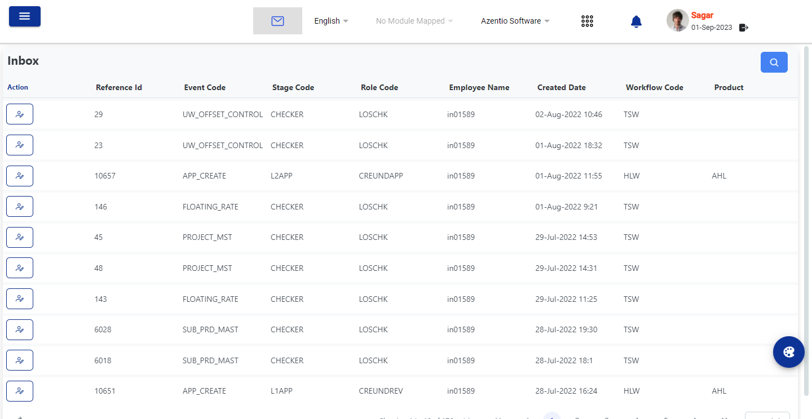Then select the under writer record in checker stagestepdefinitions.HooksClass.addScreenshot(io.cucumber.java.Scenario)screenshot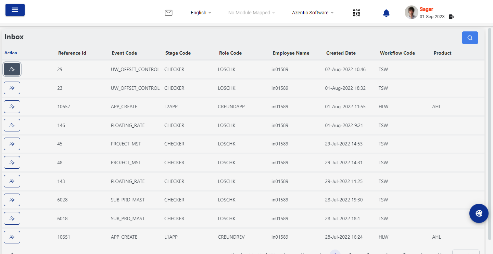Then click on approve button to approve the under writer recordstepdefinitions.HooksClass.addScreenshot(io.cucumber.java.Scenario)screenshot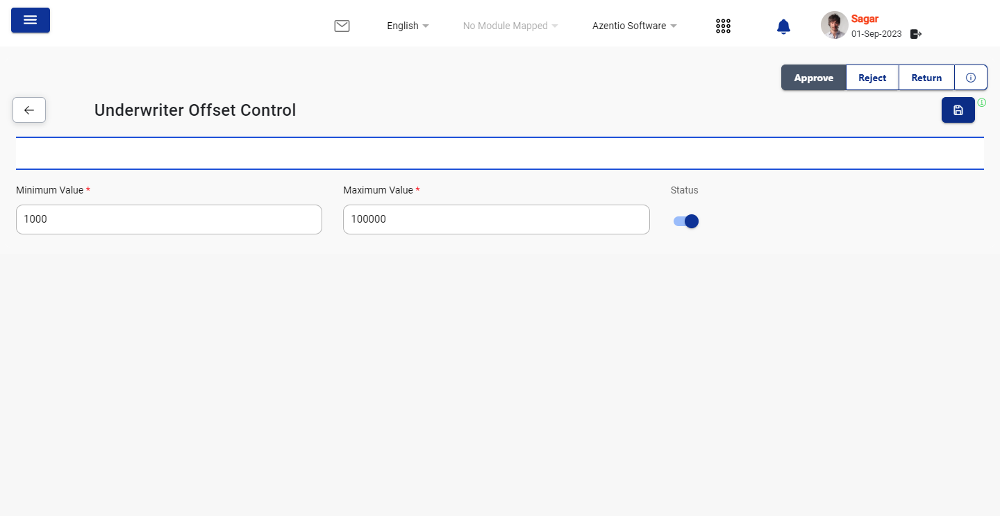And give the checker remark in alert and approve itstepdefinitions.HooksClass.addScreenshot(io.cucumber.java.Scenario)screenshot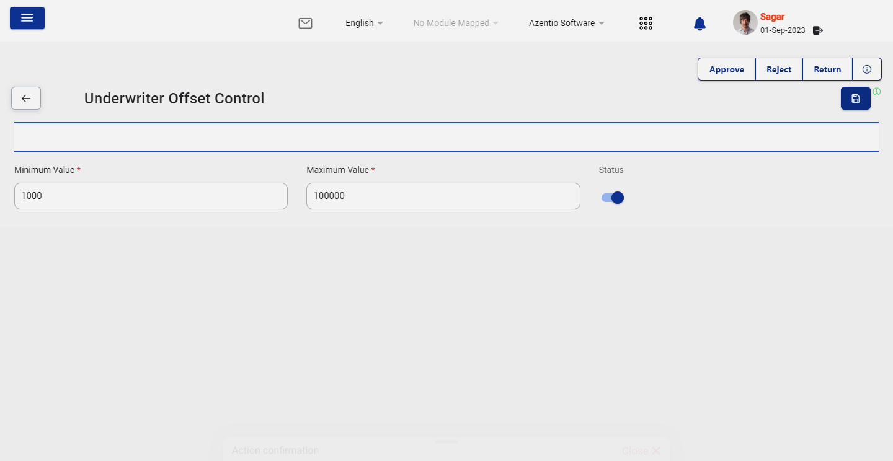Then verify checker user can able to see the successfull pop up after approving the record from checker endstepdefinitions.HooksClass.addScreenshot(io.cucumber.java.Scenario)screenshotPassTo verify user can able to create the under writer off set recordGiven Navigate to ULS application URLstepdefinitions.HooksClass.addScreenshot(io.cucumber.java.Scenario)screenshot
And click on menu bar the click on inboxstepdefinitions.HooksClass.addScreenshot(io.cucumber.java.Scenario)screenshot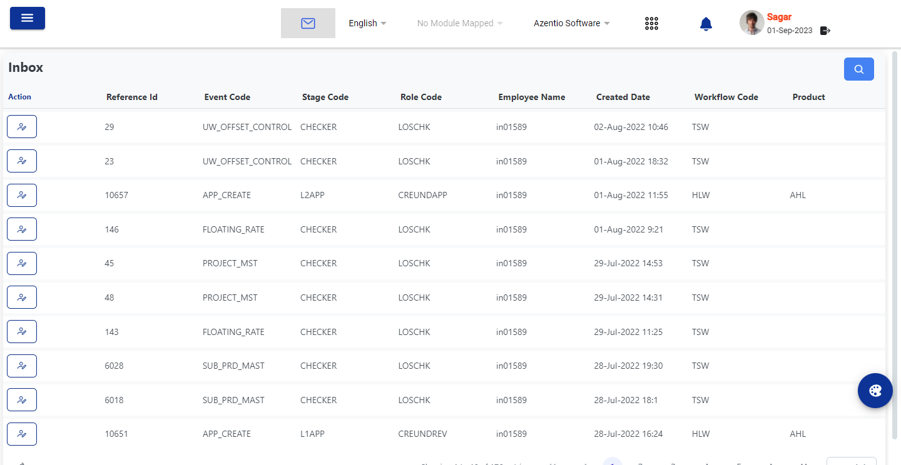Then select the under writer record in checker stagestepdefinitions.HooksClass.addScreenshot(io.cucumber.java.Scenario)screenshot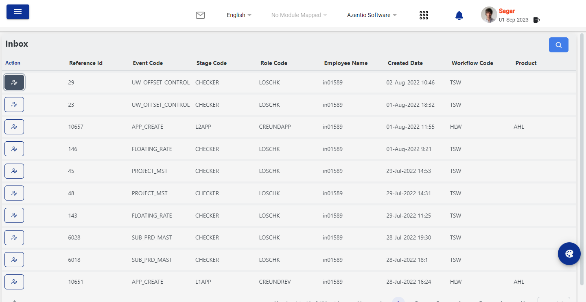Then click on approve button to approve the under writer recordstepdefinitions.HooksClass.addScreenshot(io.cucumber.java.Scenario)screenshot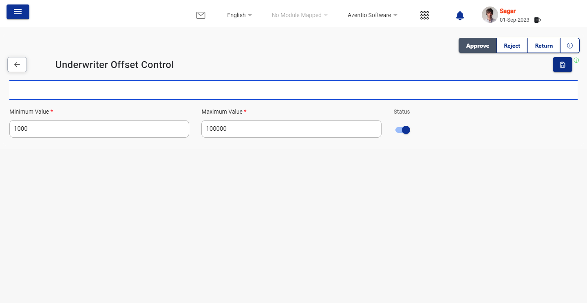And give the checker remark in alert and approve itstepdefinitions.HooksClass.addScreenshot(io.cucumber.java.Scenario)screenshot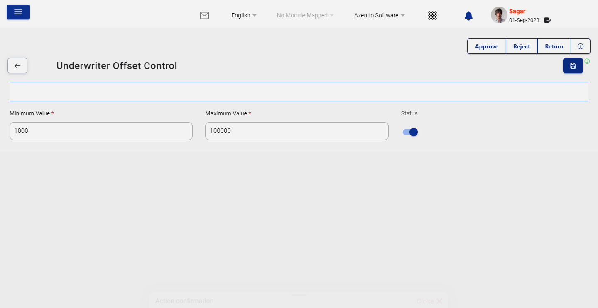Then verify checker user can able to see the successfull pop up after approving the record from checker endstepdefinitions.HooksClass.addScreenshot(io.cucumber.java.Scenario)screenshotPassTo verify user can able to create the under writer off set recordGiven Navigate to ULS application URLstepdefinitions.HooksClass.addScreenshot(io.cucumber.java.Scenario)screenshot Then login with valid maker credentialsstepdefinitions.HooksClass.addScreenshot(io.cucumber.java.Scenario)screenshot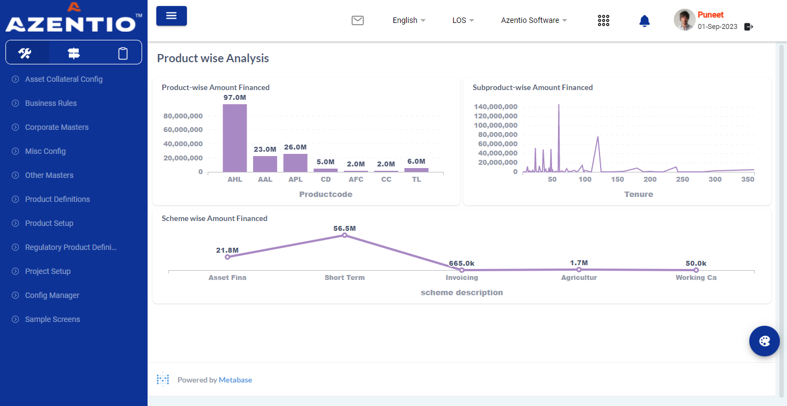And click on business rules main modulestepdefinitions.HooksClass.addScreenshot(io.cucumber.java.Scenario)screenshot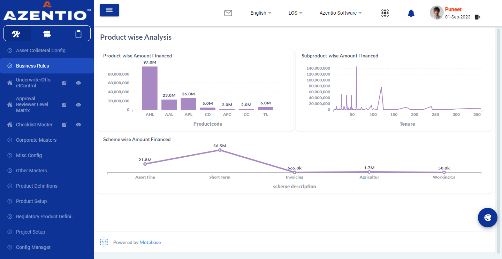And click on under writer off set control view buttonstepdefinitions.HooksClass.addScreenshot(io.cucumber.java.Scenario)screenshot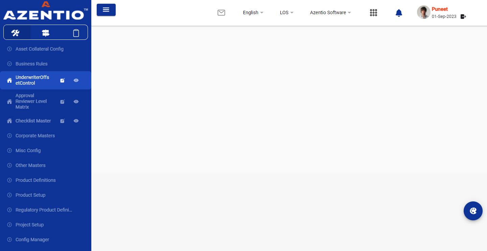Then click on add button to create under writer off set recordstepdefinitions.HooksClass.addScreenshot(io.cucumber.java.Scenario)screenshot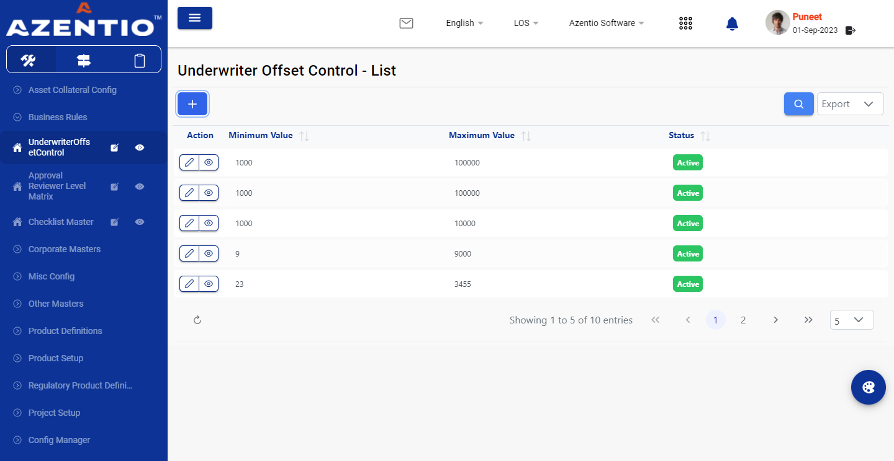Then verify back button and save buttons are visible when user click on add buttonstepdefinitions.HooksClass.addScreenshot(io.cucumber.java.Scenario)screenshot
Then login with valid maker credentialsstepdefinitions.HooksClass.addScreenshot(io.cucumber.java.Scenario)screenshot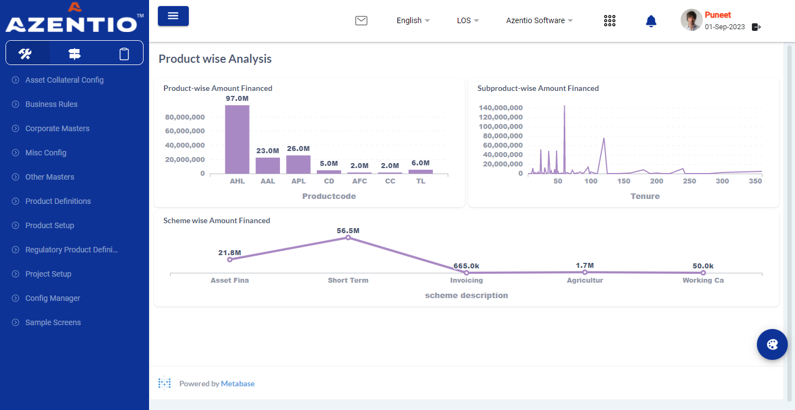And click on business rules main modulestepdefinitions.HooksClass.addScreenshot(io.cucumber.java.Scenario)screenshot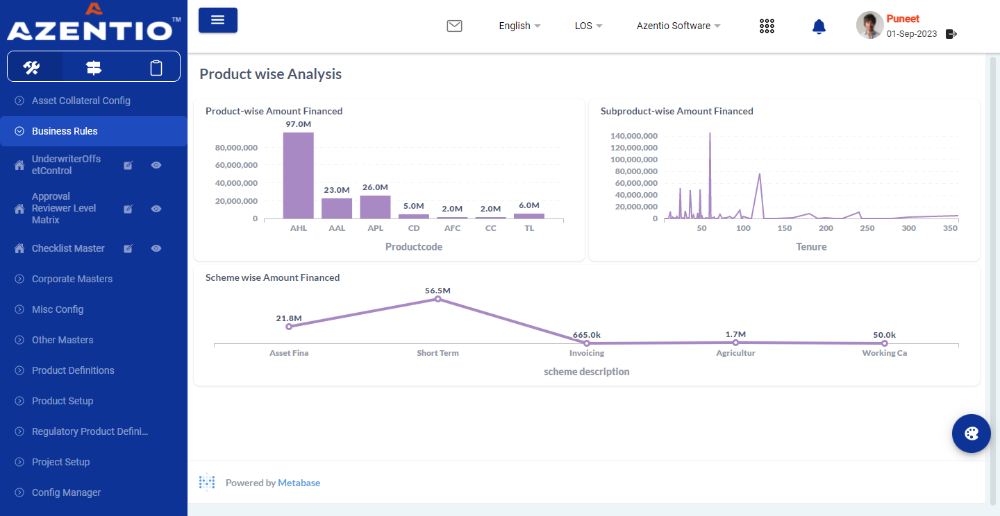And click on under writer off set control view buttonstepdefinitions.HooksClass.addScreenshot(io.cucumber.java.Scenario)screenshot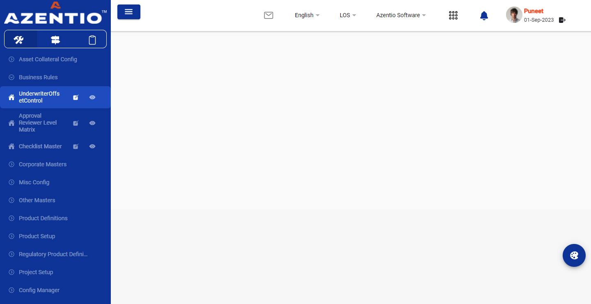Then click on add button to create under writer off set recordstepdefinitions.HooksClass.addScreenshot(io.cucumber.java.Scenario)screenshot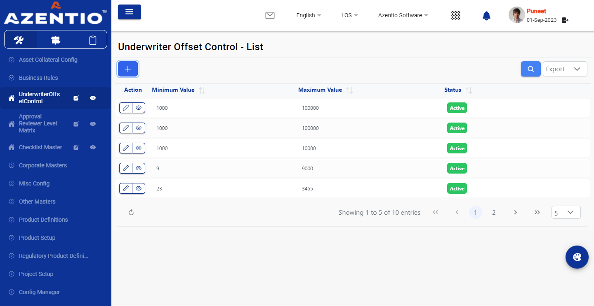Then verify back button and save buttons are visible when user click on add buttonstepdefinitions.HooksClass.addScreenshot(io.cucumber.java.Scenario)screenshot Then verify minimum value input box should be mendatory and field should be text boxstepdefinitions.HooksClass.addScreenshot(io.cucumber.java.Scenario)screenshot
Then verify minimum value input box should be mendatory and field should be text boxstepdefinitions.HooksClass.addScreenshot(io.cucumber.java.Scenario)screenshot And user can able to enter the minimum value input box for checker rejectstepdefinitions.HooksClass.addScreenshot(io.cucumber.java.Scenario)screenshotThen verify maximum value input box should be mendatory and field should be text boxstepdefinitions.HooksClass.addScreenshot(io.cucumber.java.Scenario)screenshot
And user can able to enter the minimum value input box for checker rejectstepdefinitions.HooksClass.addScreenshot(io.cucumber.java.Scenario)screenshotThen verify maximum value input box should be mendatory and field should be text boxstepdefinitions.HooksClass.addScreenshot(io.cucumber.java.Scenario)screenshot And user can able to enter the maximum value input box for checker rejectstepdefinitions.HooksClass.addScreenshot(io.cucumber.java.Scenario)screenshot
And user can able to enter the maximum value input box for checker rejectstepdefinitions.HooksClass.addScreenshot(io.cucumber.java.Scenario)screenshot Then verify available field should be non mendatory and field should be display onlystepdefinitions.HooksClass.addScreenshot(io.cucumber.java.Scenario)screenshot
Then verify available field should be non mendatory and field should be display onlystepdefinitions.HooksClass.addScreenshot(io.cucumber.java.Scenario)screenshot Then verify selected field should be non mendatory and field should be display onlystepdefinitions.HooksClass.addScreenshot(io.cucumber.java.Scenario)screenshot
Then verify selected field should be non mendatory and field should be display onlystepdefinitions.HooksClass.addScreenshot(io.cucumber.java.Scenario)screenshot Then click on save button in under writer off set screenstepdefinitions.HooksClass.addScreenshot(io.cucumber.java.Scenario)screenshot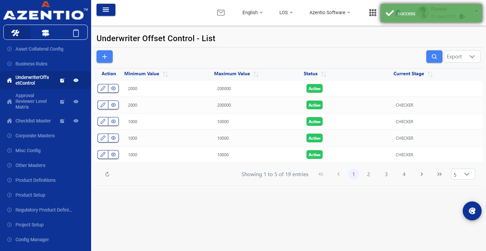When click on mail box after saving the under writer recordstepdefinitions.HooksClass.addScreenshot(io.cucumber.java.Scenario)screenshotThen click on search button to search the under writer off set recordstepdefinitions.HooksClass.addScreenshot(io.cucumber.java.Scenario)screenshot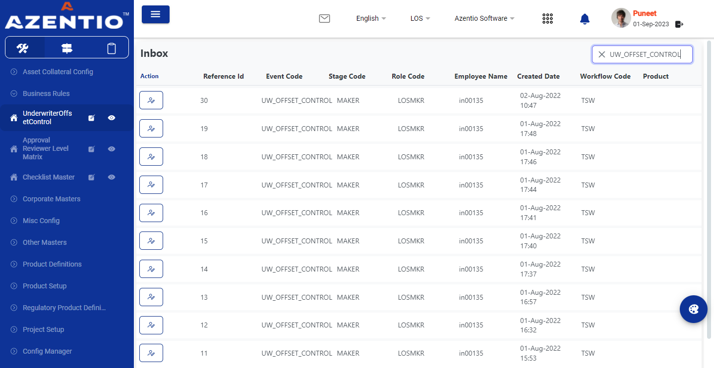And click on first under writer off set recordstepdefinitions.HooksClass.addScreenshot(io.cucumber.java.Scenario)screenshot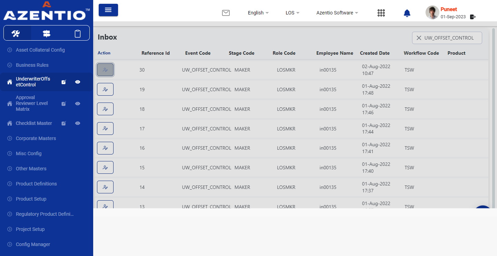And submit the under writer off set recordstepdefinitions.HooksClass.addScreenshot(io.cucumber.java.Scenario)screenshotThen give alert remark and click on submit in alertstepdefinitions.HooksClass.addScreenshot(io.cucumber.java.Scenario)screenshot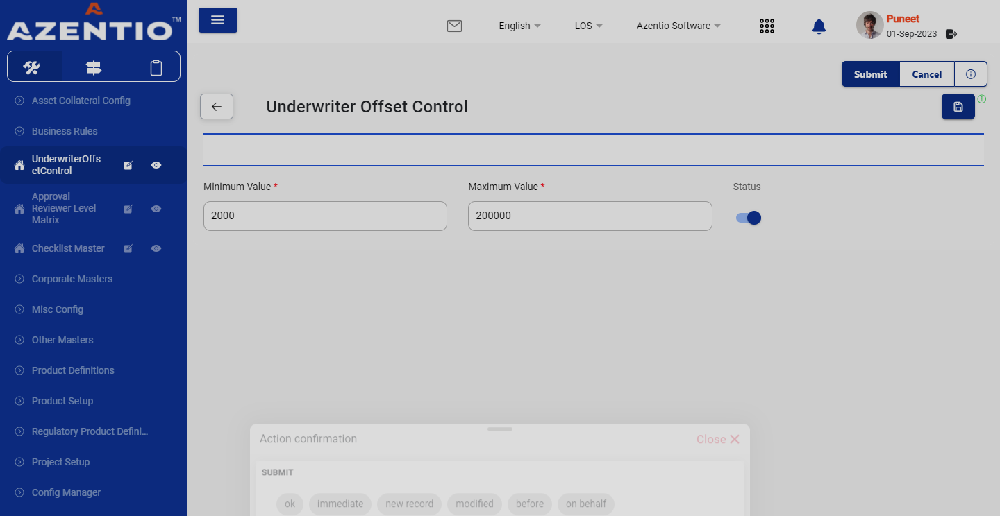Then store the checker idstepdefinitions.HooksClass.addScreenshot(io.cucumber.java.Scenario)screenshot
Then click on save button in under writer off set screenstepdefinitions.HooksClass.addScreenshot(io.cucumber.java.Scenario)screenshot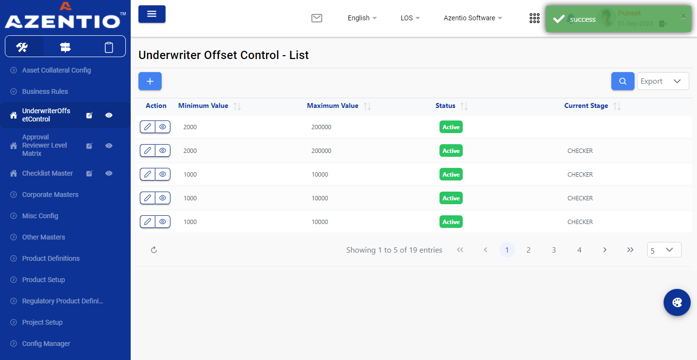When click on mail box after saving the under writer recordstepdefinitions.HooksClass.addScreenshot(io.cucumber.java.Scenario)screenshotThen click on search button to search the under writer off set recordstepdefinitions.HooksClass.addScreenshot(io.cucumber.java.Scenario)screenshot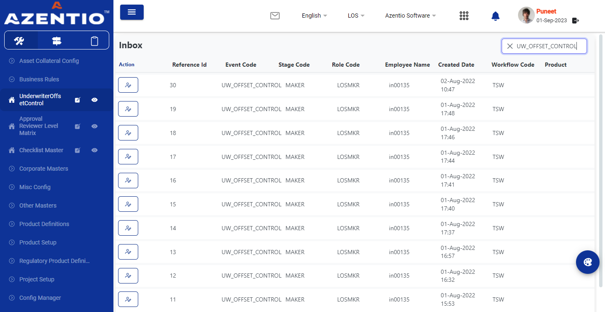And click on first under writer off set recordstepdefinitions.HooksClass.addScreenshot(io.cucumber.java.Scenario)screenshot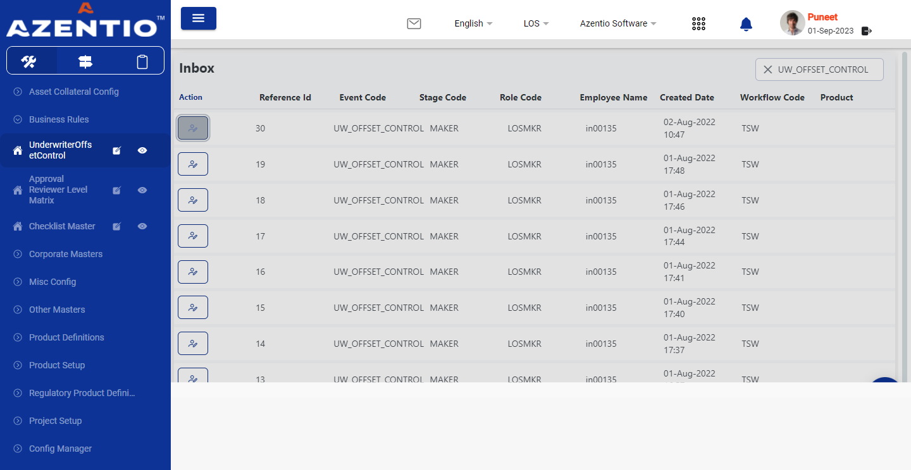And submit the under writer off set recordstepdefinitions.HooksClass.addScreenshot(io.cucumber.java.Scenario)screenshotThen give alert remark and click on submit in alertstepdefinitions.HooksClass.addScreenshot(io.cucumber.java.Scenario)screenshot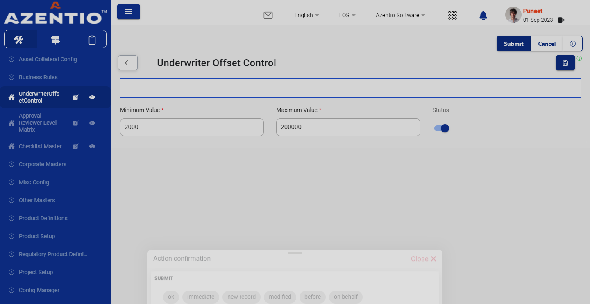Then store the checker idstepdefinitions.HooksClass.addScreenshot(io.cucumber.java.Scenario)screenshot PassTo verify checker user can able to reject the recordGiven Navigate to ULS application URLstepdefinitions.HooksClass.addScreenshot(io.cucumber.java.Scenario)screenshot
PassTo verify checker user can able to reject the recordGiven Navigate to ULS application URLstepdefinitions.HooksClass.addScreenshot(io.cucumber.java.Scenario)screenshot Then login with checker userstepdefinitions.HooksClass.addScreenshot(io.cucumber.java.Scenario)screenshot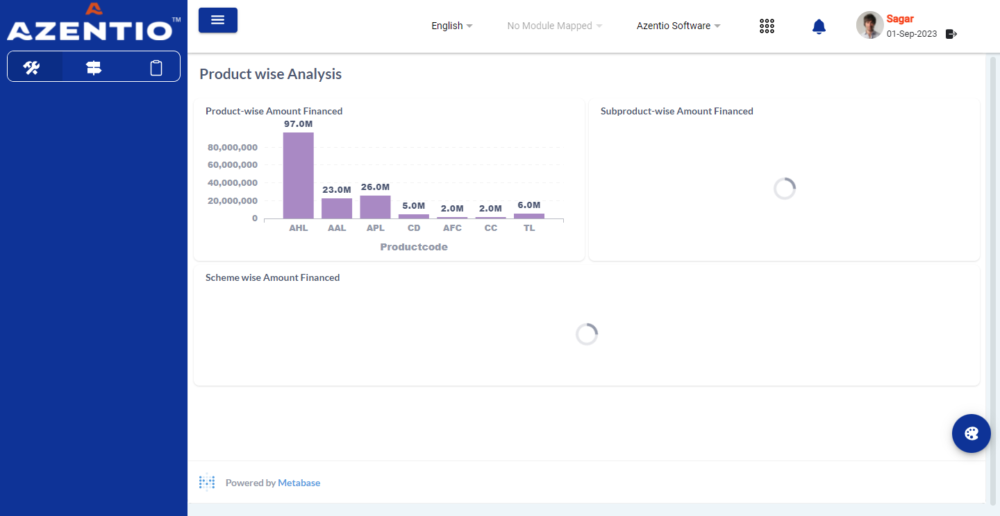And click on menu bar the click on inboxstepdefinitions.HooksClass.addScreenshot(io.cucumber.java.Scenario)screenshot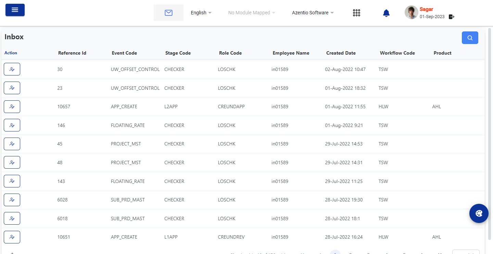Then select the scheme record which is submitted by makerstepdefinitions.HooksClass.addScreenshot(io.cucumber.java.Scenario)screenshot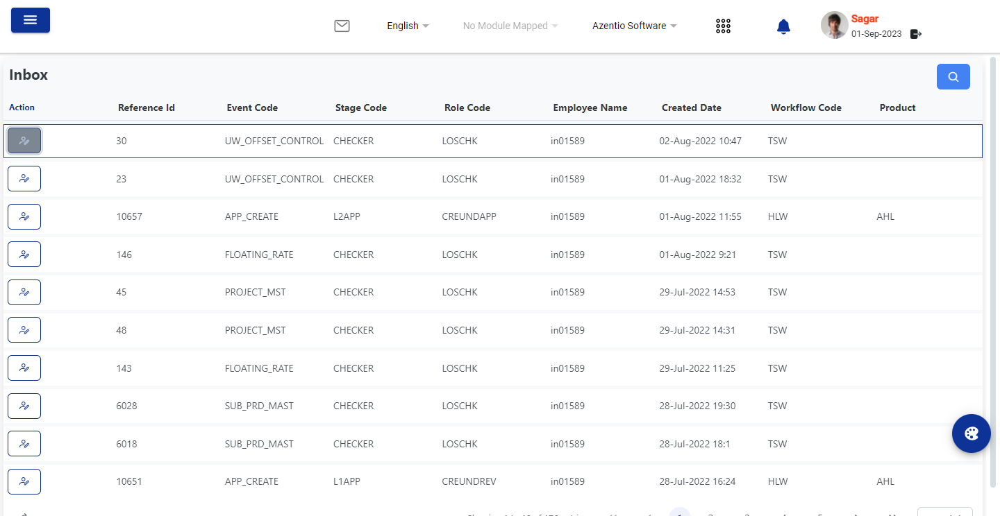And click on reject button in checker stage to reject the under writer off set control recordstepdefinitions.HooksClass.addScreenshot(io.cucumber.java.Scenario)screenshot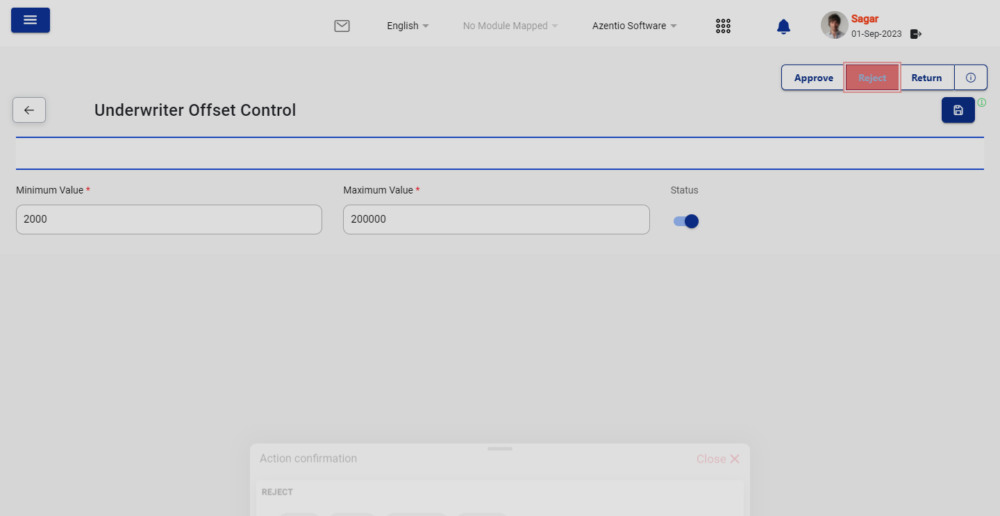And give the checker remark in alert pop upstepdefinitions.HooksClass.addScreenshot(io.cucumber.java.Scenario)screenshot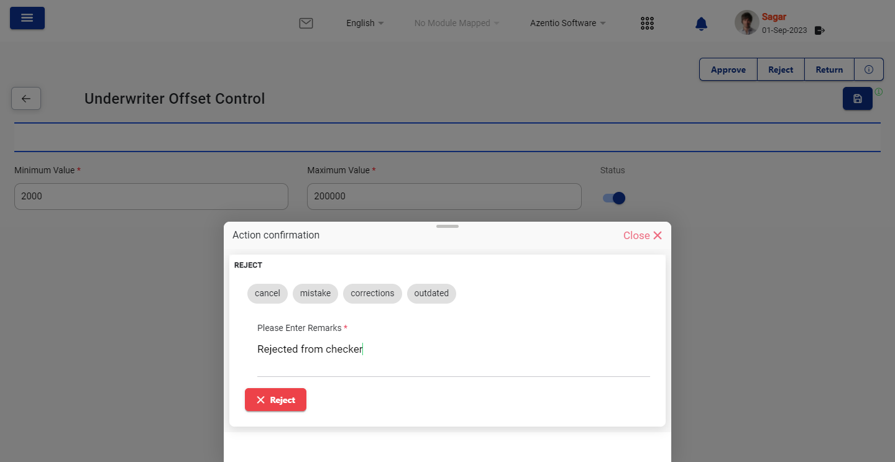And click on reject button in alert pop upstepdefinitions.HooksClass.addScreenshot(io.cucumber.java.Scenario)screenshot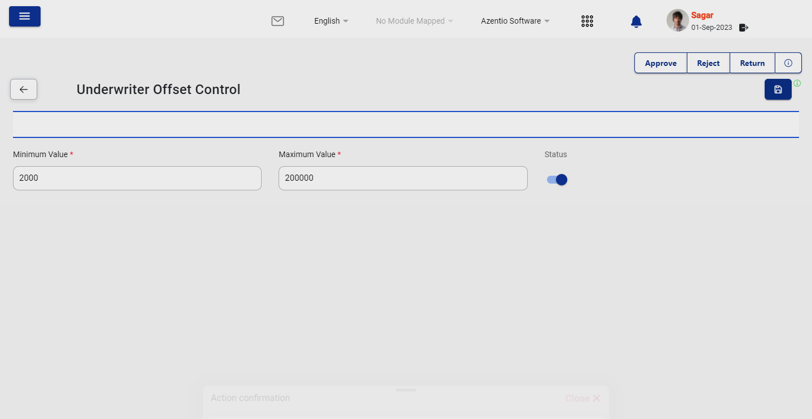Then verify checker user can able to see the reject pop up after rejecting the recordstepdefinitions.HooksClass.addScreenshot(io.cucumber.java.Scenario)screenshot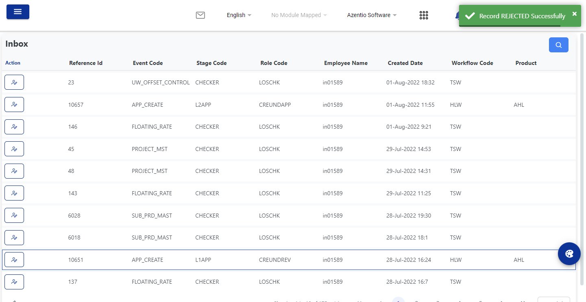PassTo verify user can able to create the under writer off set recordGiven Navigate to ULS application URLstepdefinitions.HooksClass.addScreenshot(io.cucumber.java.Scenario)screenshot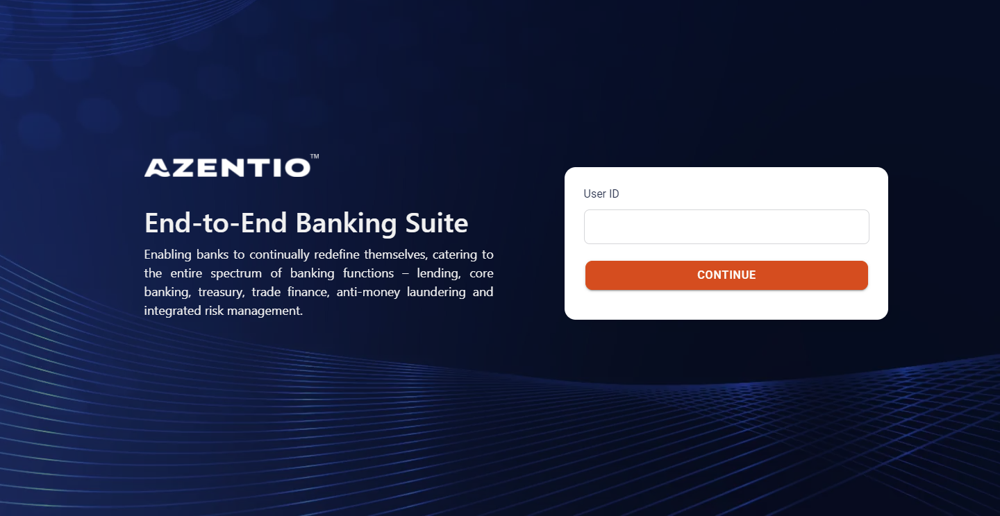Then login with valid maker credentialsstepdefinitions.HooksClass.addScreenshot(io.cucumber.java.Scenario)screenshot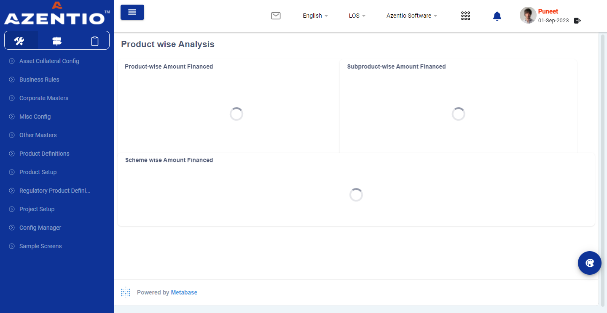And click on business rules main modulestepdefinitions.HooksClass.addScreenshot(io.cucumber.java.Scenario)screenshot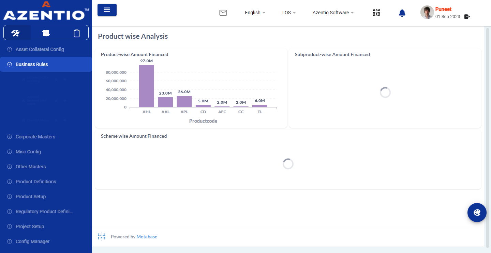And click on under writer off set control view buttonstepdefinitions.HooksClass.addScreenshot(io.cucumber.java.Scenario)screenshot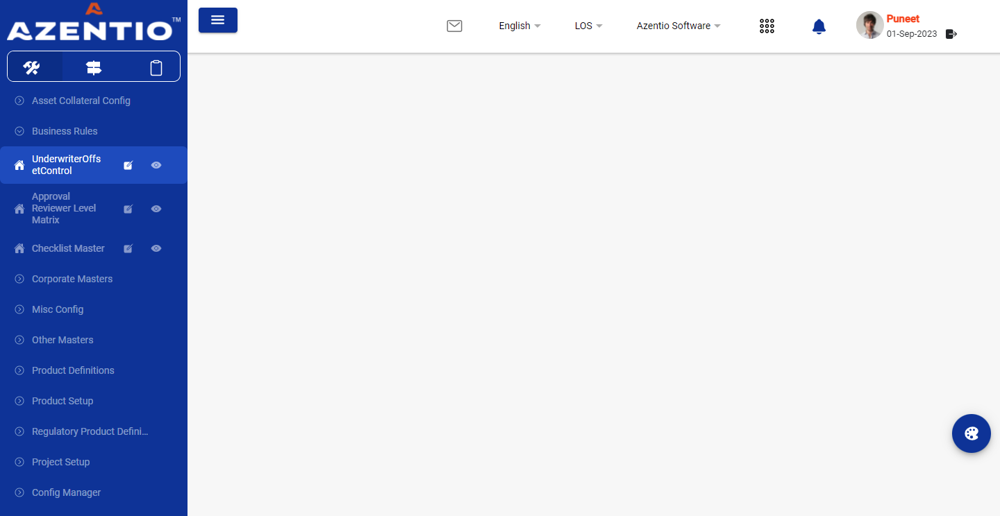Then click on add button to create under writer off set recordstepdefinitions.HooksClass.addScreenshot(io.cucumber.java.Scenario)screenshotThen verify back button and save buttons are visible when user click on add buttonstepdefinitions.HooksClass.addScreenshot(io.cucumber.java.Scenario)screenshot
Then login with checker userstepdefinitions.HooksClass.addScreenshot(io.cucumber.java.Scenario)screenshotAnd click on menu bar the click on inboxstepdefinitions.HooksClass.addScreenshot(io.cucumber.java.Scenario)screenshotThen select the scheme record which is submitted by makerstepdefinitions.HooksClass.addScreenshot(io.cucumber.java.Scenario)screenshotAnd click on reject button in checker stage to reject the under writer off set control recordstepdefinitions.HooksClass.addScreenshot(io.cucumber.java.Scenario)screenshotAnd give the checker remark in alert pop upstepdefinitions.HooksClass.addScreenshot(io.cucumber.java.Scenario)screenshotAnd click on reject button in alert pop upstepdefinitions.HooksClass.addScreenshot(io.cucumber.java.Scenario)screenshotThen verify checker user can able to see the reject pop up after rejecting the recordstepdefinitions.HooksClass.addScreenshot(io.cucumber.java.Scenario)screenshotPassTo verify user can able to create the under writer off set recordGiven Navigate to ULS application URLstepdefinitions.HooksClass.addScreenshot(io.cucumber.java.Scenario)screenshotThen login with valid maker credentialsstepdefinitions.HooksClass.addScreenshot(io.cucumber.java.Scenario)screenshotAnd click on business rules main modulestepdefinitions.HooksClass.addScreenshot(io.cucumber.java.Scenario)screenshotAnd click on under writer off set control view buttonstepdefinitions.HooksClass.addScreenshot(io.cucumber.java.Scenario)screenshotThen click on add button to create under writer off set recordstepdefinitions.HooksClass.addScreenshot(io.cucumber.java.Scenario)screenshotThen verify back button and save buttons are visible when user click on add buttonstepdefinitions.HooksClass.addScreenshot(io.cucumber.java.Scenario)screenshot Then verify minimum value input box should be mendatory and field should be text boxstepdefinitions.HooksClass.addScreenshot(io.cucumber.java.Scenario)screenshot
Then verify minimum value input box should be mendatory and field should be text boxstepdefinitions.HooksClass.addScreenshot(io.cucumber.java.Scenario)screenshot And user can able to enter the minimum value input box for checker returnstepdefinitions.HooksClass.addScreenshot(io.cucumber.java.Scenario)screenshotThen verify maximum value input box should be mendatory and field should be text boxstepdefinitions.HooksClass.addScreenshot(io.cucumber.java.Scenario)screenshot
And user can able to enter the minimum value input box for checker returnstepdefinitions.HooksClass.addScreenshot(io.cucumber.java.Scenario)screenshotThen verify maximum value input box should be mendatory and field should be text boxstepdefinitions.HooksClass.addScreenshot(io.cucumber.java.Scenario)screenshot And user can able to enter the maximum value input box for checker returnstepdefinitions.HooksClass.addScreenshot(io.cucumber.java.Scenario)screenshot
And user can able to enter the maximum value input box for checker returnstepdefinitions.HooksClass.addScreenshot(io.cucumber.java.Scenario)screenshot Then verify available field should be non mendatory and field should be display onlystepdefinitions.HooksClass.addScreenshot(io.cucumber.java.Scenario)screenshotThen verify selected field should be non mendatory and field should be display onlystepdefinitions.HooksClass.addScreenshot(io.cucumber.java.Scenario)screenshot
Then verify available field should be non mendatory and field should be display onlystepdefinitions.HooksClass.addScreenshot(io.cucumber.java.Scenario)screenshotThen verify selected field should be non mendatory and field should be display onlystepdefinitions.HooksClass.addScreenshot(io.cucumber.java.Scenario)screenshot Then click on save button in under writer off set screenstepdefinitions.HooksClass.addScreenshot(io.cucumber.java.Scenario)screenshotWhen click on mail box after saving the under writer recordstepdefinitions.HooksClass.addScreenshot(io.cucumber.java.Scenario)screenshotThen click on search button to search the under writer off set recordstepdefinitions.HooksClass.addScreenshot(io.cucumber.java.Scenario)screenshotAnd click on first under writer off set recordstepdefinitions.HooksClass.addScreenshot(io.cucumber.java.Scenario)screenshotAnd submit the under writer off set recordstepdefinitions.HooksClass.addScreenshot(io.cucumber.java.Scenario)screenshotThen give alert remark and click on submit in alertstepdefinitions.HooksClass.addScreenshot(io.cucumber.java.Scenario)screenshotThen store the checker idstepdefinitions.HooksClass.addScreenshot(io.cucumber.java.Scenario)screenshotFailTo verify checker user can able to reject the recordGiven Navigate to ULS application URLstepdefinitions.HooksClass.addScreenshot(io.cucumber.java.Scenario)screenshot
Then click on save button in under writer off set screenstepdefinitions.HooksClass.addScreenshot(io.cucumber.java.Scenario)screenshotWhen click on mail box after saving the under writer recordstepdefinitions.HooksClass.addScreenshot(io.cucumber.java.Scenario)screenshotThen click on search button to search the under writer off set recordstepdefinitions.HooksClass.addScreenshot(io.cucumber.java.Scenario)screenshotAnd click on first under writer off set recordstepdefinitions.HooksClass.addScreenshot(io.cucumber.java.Scenario)screenshotAnd submit the under writer off set recordstepdefinitions.HooksClass.addScreenshot(io.cucumber.java.Scenario)screenshotThen give alert remark and click on submit in alertstepdefinitions.HooksClass.addScreenshot(io.cucumber.java.Scenario)screenshotThen store the checker idstepdefinitions.HooksClass.addScreenshot(io.cucumber.java.Scenario)screenshotFailTo verify checker user can able to reject the recordGiven Navigate to ULS application URLstepdefinitions.HooksClass.addScreenshot(io.cucumber.java.Scenario)screenshot Then login with checker userstepdefinitions.HooksClass.addScreenshot(io.cucumber.java.Scenario)screenshotAnd click on menu bar the click on inboxstepdefinitions.HooksClass.addScreenshot(io.cucumber.java.Scenario)screenshotThen select the scheme record which is submitted by makerstepdefinitions.HooksClass.addScreenshot(io.cucumber.java.Scenario)screenshotAnd click on reject button in checker stage to return the under writer off set control recordstepdefinitions.HooksClass.addScreenshot(io.cucumber.java.Scenario)screenshotAnd give the checker remark in alert pop upstepdefinitions.HooksClass.addScreenshot(io.cucumber.java.Scenario)screenshotAnd click on return button in remark pop upstepdefinitions.HooksClass.addScreenshot(io.cucumber.java.Scenario)screenshotThen verify checker user can able to see the reject pop up after rejecting the recordstepdefinitions.HooksClass.addScreenshot(io.cucumber.java.Scenario)screenshot
Then login with checker userstepdefinitions.HooksClass.addScreenshot(io.cucumber.java.Scenario)screenshotAnd click on menu bar the click on inboxstepdefinitions.HooksClass.addScreenshot(io.cucumber.java.Scenario)screenshotThen select the scheme record which is submitted by makerstepdefinitions.HooksClass.addScreenshot(io.cucumber.java.Scenario)screenshotAnd click on reject button in checker stage to return the under writer off set control recordstepdefinitions.HooksClass.addScreenshot(io.cucumber.java.Scenario)screenshotAnd give the checker remark in alert pop upstepdefinitions.HooksClass.addScreenshot(io.cucumber.java.Scenario)screenshotAnd click on return button in remark pop upstepdefinitions.HooksClass.addScreenshot(io.cucumber.java.Scenario)screenshotThen verify checker user can able to see the reject pop up after rejecting the recordstepdefinitions.HooksClass.addScreenshot(io.cucumber.java.Scenario)screenshot
Started
Aug 2, 2022 10:42:46 AM
Ended
Aug 2, 2022 10:47:08 AM
Features Passed
0
Features Failed
1
Features
Scenarios
Steps
Timeline
Tags
| Name | Passed | Failed | Skipped | Others | Passed % |
|---|---|---|---|---|---|
| @AT_UOC_T004 | 0 | 1 | 0 | 0 | 0% |
| @AT_UOC_T002 | 1 | 0 | 0 | 0 | 100% |
| @AT_UOC_T001.3 | 1 | 0 | 0 | 0 | 100% |
| @AT_UOC_T001 | 1 | 0 | 0 | 0 | 100% |
| @AT_UOC_T003 | 1 | 0 | 0 | 0 | 100% |
| @AT_UOC_T001.2 | 1 | 0 | 0 | 0 | 100% |
System/Environment
| Name | Value |
|---|---|
| version | 10 |
| os | windows |
-
@AT_UOC_T004
1 tests
@AT_UOC_T004
1 failedStatus Timestamp TestName Fail 10:46:39 AM To verify checker user can able to reject the record To verify under writer offset control module fields and creation and updation.To verify checker user can able to reject the record -
@AT_UOC_T002
1 tests
@AT_UOC_T002
1 passedStatus Timestamp TestName Pass 10:43:31 AM To verify checker user can able to approve the under writer off set control record To verify under writer offset control module fields and creation and updation.To verify checker user can able to approve the under writer off set control record -
@AT_UOC_T001.3
1 tests
@AT_UOC_T001.3
1 passedStatus Timestamp TestName Pass 10:45:58 AM To verify user can able to create the under writer off set record To verify under writer offset control module fields and creation and updation.To verify user can able to create the under writer off set record -
@AT_UOC_T001
1 tests
@AT_UOC_T001
1 passedStatus Timestamp TestName Pass 10:42:48 AM To verify user can able to create the under writer off set record To verify under writer offset control module fields and creation and updation.To verify user can able to create the under writer off set record -
@AT_UOC_T003
1 tests
@AT_UOC_T003
1 passedStatus Timestamp TestName Pass 10:45:25 AM To verify checker user can able to reject the record To verify under writer offset control module fields and creation and updation.To verify checker user can able to reject the record -
@AT_UOC_T001.2
1 tests
@AT_UOC_T001.2
1 passedStatus Timestamp TestName Pass 10:44:18 AM To verify user can able to create the under writer off set record To verify under writer offset control module fields and creation and updation.To verify user can able to create the under writer off set record
-
org.junit.ComparisonFailure
1 tests
org.junit.ComparisonFailure
1 failedStatus Timestamp TestName Fail 10:47:03 AM Then verify checker user can able to see the reject pop up after rejecting the record To verify under writer offset control module fields and creation and updation.To verify checker user can able to reject the record.Then verify checker user can able to see the reject pop up after rejecting the record